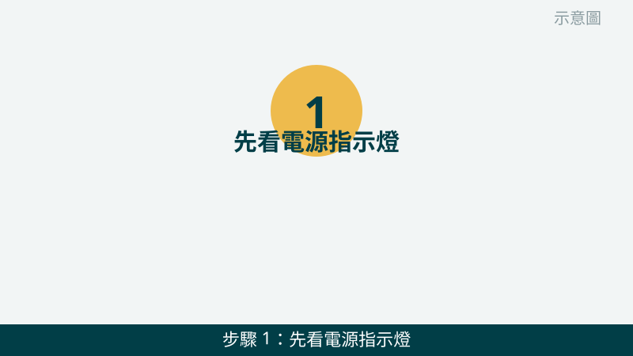
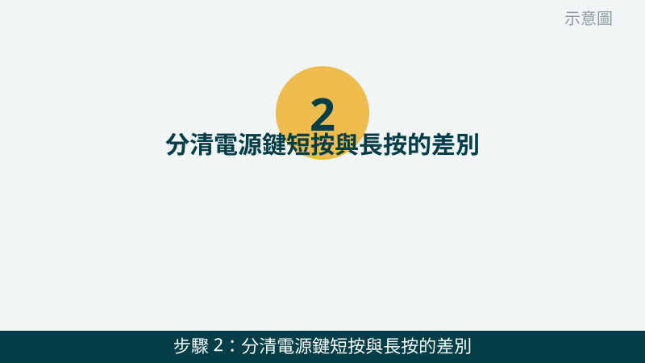
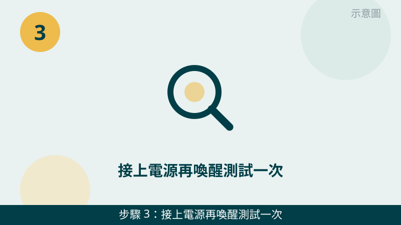
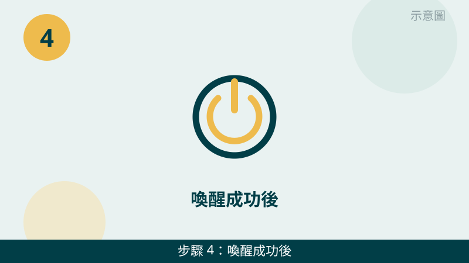
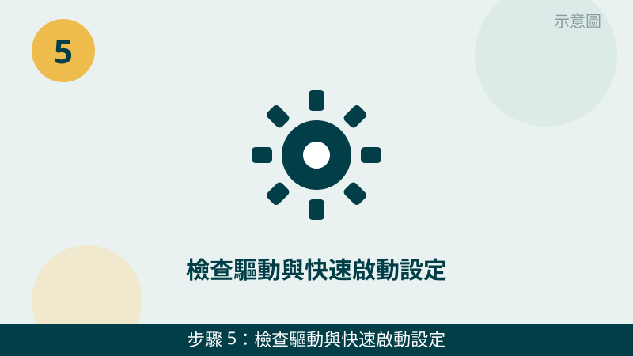
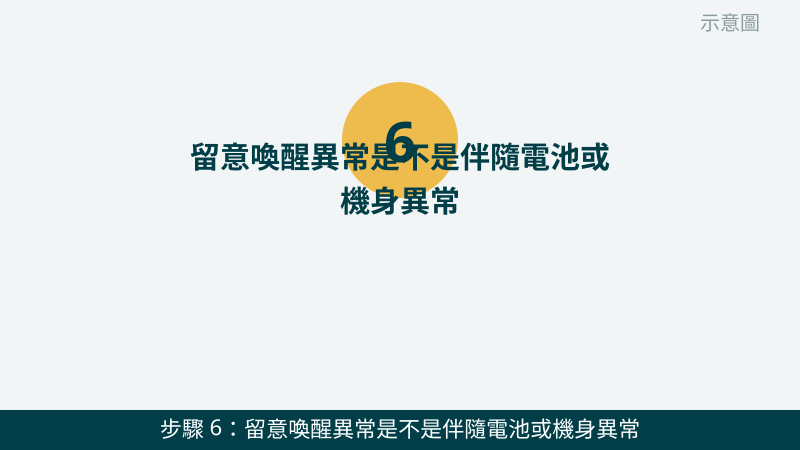

筆電蓋上再打開卻叫不醒，先不要急著一直按電源鍵。喚不醒的原因常常是設定或電源問題，不一定是硬體壞掉。而且「蓋上之後是哪一種狀態」本身就是重要線索，檢查之前，請先分清您的筆電是睡眠、休眠，還是已經關機了。
開始之前先跟您說明分清的方法：睡眠是淺眠、喚醒最快；休眠是把工作存到硬碟再幾乎斷電、喚醒要等一下；關機則是全部重來。您可以看電源指示燈：睡眠時多半緩慢閃爍，休眠與關機時多半是熄的。您先回想蓋上前做過什麼、指示燈現在是什麼樣子，檢查時會更有方向。
指示燈的樣子先傳給我們看
把電源指示燈、充電燈號拍下來傳 LINE，燈號怎麼亮、接電源有沒有反應，一看就知道往哪個方向查。先免費評估、報價透明，確認後再預約維修。
筆電喚不醒自救檢查清單（由簡到難）
- 1. 先看電源指示燈，再用最溫和的方式喚醒。請先看電源指示燈是閃爍、恆亮還是全熄，再依序試：動一下滑鼠、按一下鍵盤、輕輕短按一下電源鍵（按一下就放開，不要按住）。怎麼判斷：螢幕亮起來、回到原本桌面，就是睡眠喚醒成功；燈號完全沒變化，再往下一步查。

示意圖（非官方截圖） - 2. 分清電源鍵短按與長按的差別，不要一開始就長按。短按一下電源鍵，通常是喚醒或進入睡眠；長按住電源鍵約 10 秒，是強制關機，沒存檔的工作可能會不見。所以順序很重要：先短按、等一下，再試一次；只有所有溫和方式都沒反應時，才考慮長按強制關機，關機後再正常開機一次。怎麼判斷：短按就醒，代表只是睡眠比較深；要長按才關得掉，代表系統可能已經卡住了。

示意圖（非官方截圖） - 3. 接上電源再喚醒測試一次。請把原廠變壓器接好、確認插座有電，等充電燈號亮起來後再試著喚醒。電池快耗盡時，筆電可能根本沒力氣從休眠醒來，看起來就像壞了。怎麼判斷：接上電源、充電燈亮、再喚醒就成功，代表多半是電力問題；接上電源還是完全沒燈號，請先拍照問我們，不要自己換變壓器或拆電池測試。

示意圖（非官方截圖） - 4. 喚醒成功後，檢查滑鼠與鍵盤的喚醒設定。喚醒成功之後，請開啟 Windows「設定」→「系統」→「電源」→「闔上筆電蓋」相關設定，確認闔蓋時是設定成睡眠或休眠（而不是關機）；再到「裝置管理員」裡滑鼠與鍵盤的內容，確認有勾選「允許這個裝置喚醒電腦」。怎麼判斷：改完設定後闔蓋再打開，動滑鼠或按鍵盤就能喚醒，就是設定這一關；還是要按電源鍵才醒，代表喚醒裝置的設定還沒生效。

示意圖（非官方截圖） - 5. 檢查驅動與快速啟動設定。喚醒成功之後，請到 Windows Update 把系統更新跑完，並確認顯示卡與晶片組驅動沒有出現驚嘆號；如果喚醒後常常黑屏或卡住，可以試著到「電源選項」裡把「開啟快速啟動」先取消勾選，再重開機測試幾次。怎麼判斷：關掉快速啟動後喚醒變穩定了，代表快速啟動與驅動之間有衝突；不確定的設定請先拍照問我們，不要一次改太多設定。

示意圖（非官方截圖） - 6. 留意喚醒異常是不是伴隨電池或機身異常。請順便看一下：筆電底部或鍵盤面有沒有鼓起、觸控板有沒有被頂起來、機身有沒有異常發燙或異味。怎麼判斷：如果只有喚醒問題、機身完全正常，多半往設定與驅動查；但只要有鼓起、變形或異味，請立刻停用、不要再充電或按壓，並先拍照問我們。

示意圖（非官方截圖）
出現這些情況，就別再自己試了
- 喚不醒又伴隨電池膨脹警訊（底部鼓起、觸控板被頂起、機身變形）——請立刻停用、不要再充電、不要按壓或自己拆電池，先拍照問我們
- 接上電源也完全沒燈號、按電源鍵完全沒反應，或伴隨燒焦味、異音
- 強制關機後還是開不了機、反覆開機失敗，或出現藍屏、黑屏
- 想自己拆機換電池或檢查排線但不確定怎麼拆——請先拍照問我們，不要硬拆，拆壞排線或弄斷卡扣反而更貴
如果您的狀況是「喚醒成功、但每次都要等很久」，也可以順手看一下變慢卡頓篇：喚醒慢與開機慢常常是同一類原因。我們的檢測會把電源設定、驅動、電池健康一起交叉比對，找出真正的問題再報價給您。
常見問題
筆電蓋上喚不醒，一定要強制關機嗎？
不一定，請先從最溫和的方式試起。睡眠狀態通常按一下電源鍵、動一下滑鼠或鍵盤就能喚醒；如果完全沒反應，再接上電源等一下、試短按電源鍵。只有在所有溫和方式都沒反應時，才考慮長按電源鍵強制關機，而且要先有心理準備：沒存檔的工作可能會不見，所以強制關機是最後手段，不是第一步。
怎麼知道我的筆電是睡眠、休眠還是關機了？
可以從指示燈和喚醒速度分清。睡眠時電源燈通常會緩慢閃爍，喚醒很快、畫面馬上回來；休眠時電源燈多半是熄的，喚醒要等一下、會看到開機畫面但回到原本的桌面；關機時則是完全重新開機，會回到登入畫面、原本開的程式都不見了。您把指示燈的樣子拍下來傳給我們，也能幫忙判斷。
喚不醒的狀況拍照傳 LINE 就可以先判斷嗎？
可以先給方向。把電源指示燈的樣子、接上電源後有沒有充電燈號、以及蓋上前是睡眠還是休眠的設定拍下來傳給我們，通常能先看出是設定、驅動還是電池方向的問題；要完全確認，還是需要實機檢測，這部分評估不收費，請放心傳。
相關文章：電腦變慢卡頓、開機很久怎麼辦、自救百科總覽